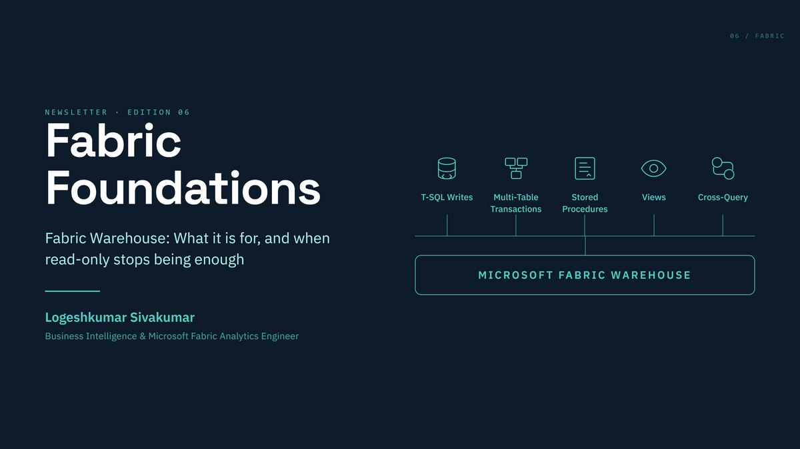
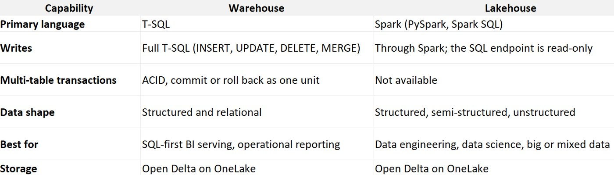

Fabric Warehouse: What it is for, and when read-only stops being enough
Logeshkumar Sivakumar · September 22, 2026 · 4 min read

Microsoft Fabric Warehouse is where you serve with T-SQL. It has the ability to write, and to change several tables as one transaction. Treat it as SQL Server dropped into Fabric and you miss the point, and you also miss why T-SQL writes and multi-table transactions land here and nowhere else in the platform.
What is the Microsoft Fabric Warehouse?
The Microsoft Fabric Warehouse is a fully managed, T-SQL data warehouse that stores its tables as open Delta Parquet in OneLake and supports full writes, multi-table ACID transactions, views, functions, and stored procedures. Infrastructure management is handled by the service. You do not provision servers, and there are no traditional indexes to tune; performance is managed by the query optimizer and by statistics the engine maintains automatically. Compute is serverless and scales with your capacity, so manual sizing is not required for the default experience. Because the tables remain open Delta on OneLake, other engines in Fabric, including Spark and Power BI, can read them. The managed experience does not cost you the open format.
What the Warehouse does that a Lakehouse cannot
The defining difference is write capability and transactions, not storage. The Lakehouse SQL analytics endpoint is read-only. To write with T-SQL and to commit changes across several tables as a single unit, you use a Warehouse. Multi-table ACID transactions are the reason finance and operational reporting workloads frequently run in a Warehouse: when a load must update a fact table and its dimension together, a transaction ensures that both changes commit or neither does, so the tables cannot be left in a partial state.

The storage row is identical for both, which is why the format is not the deciding factor.
The T-SQL surface area available in the Warehouse
The Warehouse provides the T-SQL constructs a SQL developer expects. CREATE TABLE defines dimensions and facts, CREATE TABLE AS SELECT (CTAS) builds curated tables from a query, Stored procedures encapsulate reusable loads, and Views expose a stable shape for reporting. For ingestion, COPY INTO bulk loads files such as Parquet or CSV directly into a table. One behaviour differs from SQL Server and is worth noting: primary and foreign keys are metadata only. They are declared as NOT ENFORCED, so the engine does not reject duplicate or orphan rows. Referential integrity must be enforced in the load logic rather than by the constraint.
When to choose the Microsoft Fabric Warehouse
Choose a Warehouse when the workload is structured, SQL-first, and requires T-SQL writes or transactional updates across multiple tables, or when the team consists of SQL and BI developers rather than Spark engineers.
Choose a Lakehouse when the data is large, mixed, or unstructured and the work is Spark-based engineering. Both stores use open Delta on OneLake, so the storage format is not the deciding factor. The decision rests on the development language, the transactional requirement, and the shape of the data.
Serving from the Warehouse without duplicating data
A Warehouse does not require its own copy of upstream data to serve it. Because both stores sit on OneLake, a Warehouse can query Lakehouse tables in the same workspace using three-part naming, without copying data. A common pattern follows from this: engineer the data in the Lakehouse with Spark, then cross-query or CTAS the curated result into the Warehouse and serve it with T-SQL. Copy data into the Warehouse only when an isolated served version is genuinely required.
The case for a Microsoft Fabric Warehouse is not that it stores data more efficiently, but that it provides T-SQL writes and multi-table transactions that no other store in Fabric offers. Where a workload depends on those capabilities, the Warehouse is the appropriate choice.
Fabric Foundations Newsletter examines one layer of the platform in each edition. Subscribe to receive the next one.
Previous in this series: The Four Delta Maintenance Operations That Separate Building a Pipeline from Running One
Next in this series: SQL Database in Microsoft Fabric: The OLTP Store That Mirrors Itself into OneLake
References:
- What is Fabric Data Warehouse? - learn.microsoft.com
- Microsoft Fabric decision guide: Choose between Warehouse and Lakehouse - learn.microsoft.com
- Primary keys, foreign keys, and unique keys in Warehouse in Microsoft Fabric - learn.microsoft.com
#MicrosoftFabric #FabricWarehouse #TSQL #OneLake #DataWarehouse #DataEngineering #Lakehouse #DeltaLake